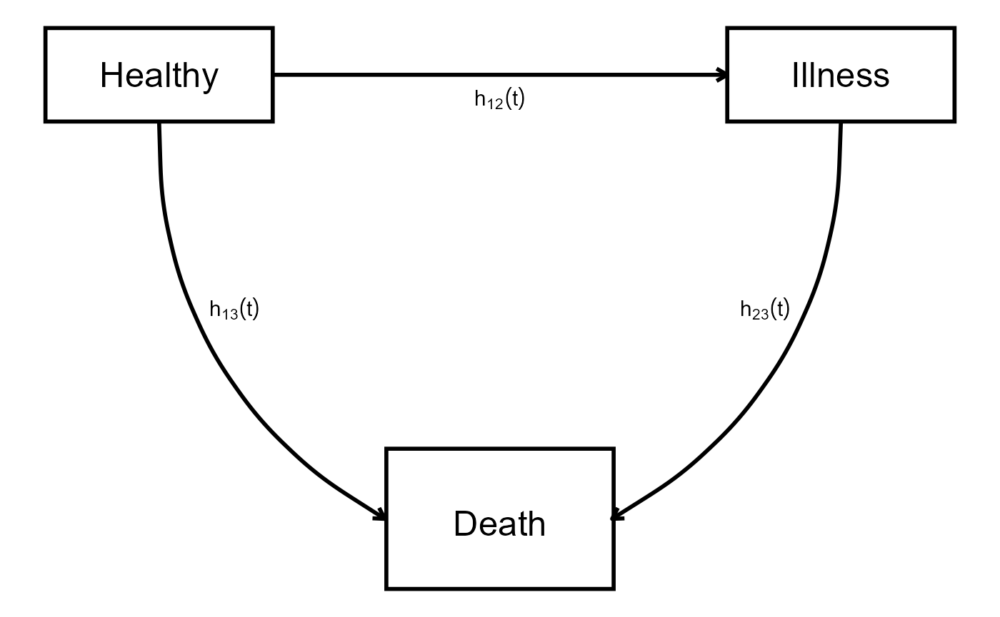

Multi-State Processes
Grigorios Papageorgiou
2026-01-28
Source:vignettes/Multi_State_Processes.Rmd
Multi_State_Processes.RmdJoint Models with Multi-state Processes
Introduction
A subject may often transition between multiple states, and we are interested in assessing the association of longitudinal marker(s) with each of these transitions. This vignette illustrates how to achieve this using JMbayes2.
We will consider a simple case with one longitudinal outcome and a three-state (illness-death) model, but this application can be extended for the cases of multiple longitudinal markers and more than three states.
Data
First, we will simulate data from a joint model with a single linear mixed effects model and a multi-state process with three possible states. The multi-state process can be visualized as: 
where all subjects start from the state “Healthy” and then can transition to either state “Illness” and then state “Death” or directly to state “Death.” In this case, states “Healthy” and “Illness” are transient states as the subject, when occupying these states, can still transition to other states, whereas “Death” is an absorbing state as when a subject reaches this state, then no further transitions can occur. This means that three transitions are possible: 1 \rightarrow 2, 1 \rightarrow 3 and 2 \rightarrow 3 with transition intensities h_{12}\left(t\right), h_{13}\left(t\right) and h_{23}\left(t\right) respectively.
For our example, the default functional form is assumed, i.e., that the linear predictor \eta(t) of the mixed model is associated with each transition intensity at time t. The following piece of code simulates the data:
# Set seed for reproducibility
set.seed(1710)
# Sample sizes and settings
N <- 1500
n_per <- 14
# Baseline covariate (binary)
X <- rbinom(N, 1, 0.5)
# Longitudinal parameters
beta <- c(5, -0.1)
sigma_e <- 1
D <- matrix(c(1.0, 0.2, 0.2, 0.3), 2, 2)
b <- MASS::mvrnorm(N, mu = c(0, 0), Sigma = D)
# Simulate longitudinal data
df_long <- do.call(rbind, lapply(1:N, function(i) {
obs_times <- sort(c(0, runif(n_per - 1, 0, 18)))
XX <- cbind(1, obs_times)
eta <- XX %*% beta + XX %*% b[i, ]
y <- rnorm(n_per, eta, sigma_e)
data.frame(id = i, time = obs_times, y = y, X = X[i])
}))
# Weibull hazard parameters (shape, scale), association, covariate effects
weib_shape <- c(2.2, 1.8, 2.5)
weib_scale <- c(0.04, 0.03, 0.05)
alpha <- c(0.6, 0.4, 0.8) # different for each transition
gamma <- c(0.5, -0.3, 0.7) # different for each transition
Ctimes <- runif(N, 7, 10)
# Longitudinal trajectory function
yfun <- function(b_i, t) beta[1] + b_i[1] + (beta[2] + b_i[2]) * t
# Simulate event time via inverse transform
sim_time <- function(shape, scale, alpha, gamma, X, b_i, tmax = 20) {
U <- runif(1)
cumhaz <- function(t) {
integrate(function(s) {
h0 <- shape * scale * (scale * s)^(shape - 1)
h0 * exp(alpha * yfun(b_i, s) + gamma * X)
}, 0, t)$value
}
f <- function(t) cumhaz(t) + log(U)
out <- try(uniroot(f, c(1e-5, tmax))$root, silent = TRUE)
if (inherits(out, "try-error")) Inf else out
}
# Simulate multi-state transitions
df_surv <- do.call(rbind, lapply(1:N, function(i) {
b_i <- b[i, ]; X_i <- X[i]; C <- Ctimes[i]
T01 <- sim_time(weib_shape[1], weib_scale[1], alpha[1], gamma[1], X_i, b_i)
T02 <- sim_time(weib_shape[2], weib_scale[2], alpha[2], gamma[2], X_i, b_i)
if (T01 < T02 && T01 < C) {
T12 <- sim_time(weib_shape[3], weib_scale[3], alpha[3], gamma[3], X_i, b_i)
Tdeath <- T01 + T12
data.frame(id = i,
transition = c(1, 2, 3),
Tstart = c(0, 0, T01),
Tstop = c(T01, T01, min(Tdeath, C)),
status = c(1, 0, as.integer(T12 < (C - T01))),
X = X_i)
} else if (T02 < C) {
data.frame(id = i, transition = c(1, 2), Tstart = c(0, 0), Tstop = c(T02, T02), status = c(0, 1), X = X_i)
} else {
data.frame(id = i,
transition = c(1, 2),
Tstart = 0,
Tstop = C,
status = 0,
X = X_i)
}
}))
# Filter longitudinal data to observed period
df_long2 <- merge(df_long, df_surv[, c("id", "Tstop")], by = c("id"))
df_long2 <- df_long2[!duplicated(df_long2, by = c('id', 'time')), ]
df_long2 <- df_long2[df_long2$time <= df_long2$Tstop, ]The data for the multi-state process need to be in the appropriate long format:
head(df_surv, n = 5L)
#> id transition Tstart Tstop status X
#> 1 1 1 0.000000 1.014016 1 0
#> 2 1 2 0.000000 1.014016 0 0
#> 3 1 3 1.014016 1.971082 1 0
#> 4 2 1 0.000000 7.231688 0 1
#> 5 2 2 0.000000 7.231688 0 1For example, subject 1 experienced the following transition: 1 \rightarrow 2 and therefore is represented
in 3 rows, one for each transition, because all of these transitions
were plausible. On the other hand, subject 2 is only represented by two
rows, only for transitions 1 \rightarrow
2 and 1 \rightarrow 3 since
these are the only transitions possible from state 1. Since subject 2
never actually transitioned to state 2, transition 2 \rightarrow 3 was never possible, and
therefore, no row for this transition is in the dataset. It is also
important to note that the time in the dataset follows the counting
process formulation with intervals specified by Tstart and
Tstop and that there is a variable (in this case
transition) indicating which transition the row corresponds
to.
Fitting the model
When the data in the appropriate format are available, fitting the
model is very straightforward. First we fit a linear mixed model using
the lme() function from package nlme:
mixedmodel <- lme(y ~ time, random = ~ time | id, data = df_long2)Then, we fit a multi-state model using function coxph()
from package survival, making sure we use the counting
process specification and that we add strata(transition) to
stratify by the transition indicator variable in the dataset.
Furthermore, we add an interaction between covariate X and
each transition to allow the effect of this covariate to vary across
transitions.
Finally, to fit the joint model, we simply run:
jm_ms_model <- jm(msmodel, mixedmodel, time_var = "time", n_iter = 5000L,
functional_forms = ~ value(y):strata(transition))
summary(jm_ms_model)
#>
#> Call:
#> JMbayes2::jm(Surv_object = msmodel, Mixed_objects = mixedmodel,
#> time_var = "time", functional_forms = ~value(y):strata(transition),
#> n_iter = 5000L)
#>
#> Data Descriptives:
#> Number of Groups: 1500 Number of events: 1784 (45.8%)
#> Number of Observations:
#> y: 11573
#>
#> DIC WAIC LPML
#> marginal 46878.89 46819.94 -23410.00
#> conditional 49735.76 48815.58 -25551.82
#>
#> Random-effects covariance matrix:
#>
#> StdDev Corr
#> (Intr) 1.0559 (Intr)
#> time 0.5624 0.2185
#>
#> Survival Outcome:
#> Mean StDev 2.5% 97.5% P
#> X:strata(transition)transition=1 0.4802 0.1091 0.2696 0.7001 0.000
#> X:strata(transition)transition=2 -0.2421 0.1541 -0.5442 0.0593 0.115
#> X:strata(transition)transition=3 0.6566 0.0821 0.4999 0.8175 0.000
#> value(y):strata(transition)transition=1 0.5593 0.0227 0.5173 0.6044 0.000
#> value(y):strata(transition)transition=2 0.3224 0.0422 0.2342 0.4012 0.000
#> value(y):strata(transition)transition=3 0.2993 0.0185 0.2653 0.3394 0.000
#> Rhat
#> X:strata(transition)transition=1 1.0070
#> X:strata(transition)transition=2 1.0160
#> X:strata(transition)transition=3 1.0349
#> value(y):strata(transition)transition=1 1.0534
#> value(y):strata(transition)transition=2 1.0910
#> value(y):strata(transition)transition=3 1.2216
#>
#> Longitudinal Outcome: y (family = gaussian, link = identity)
#> Mean StDev 2.5% 97.5% P Rhat
#> (Intercept) 5.0100 0.0309 4.9507 5.0713 0 0.9998
#> time -0.1051 0.0167 -0.1377 -0.0726 0 1.0054
#> sigma 0.9313 0.0071 0.9174 0.9450 0 1.0004
#>
#> MCMC summary:
#> chains: 3
#> iterations per chain: 5000
#> burn-in per chain: 500
#> thinning: 1
#> time: 4.4 minwhich differs from a default call to jm() by the
addition of the functional_forms argument specifying that
we want an “interaction” between the marker’s value and each transition,
which translates into a separate association parameter for the
longitudinal marker and each transition.